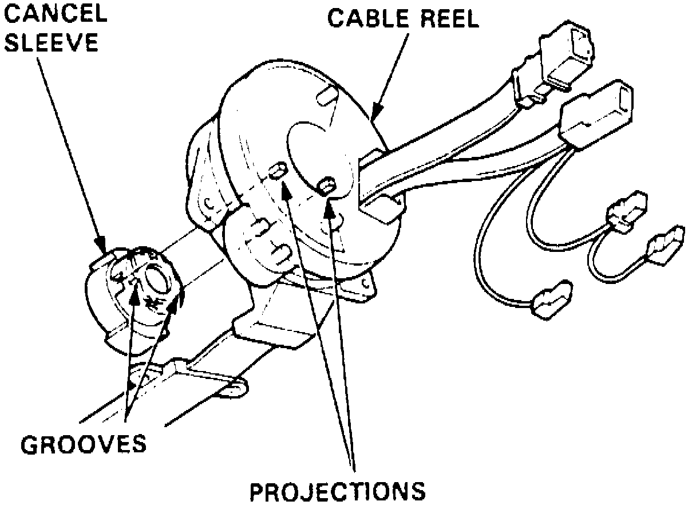
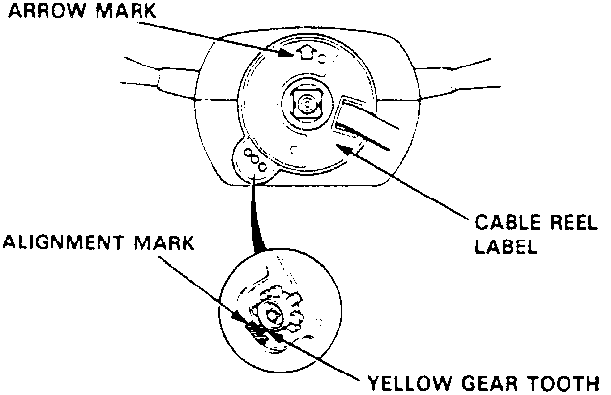
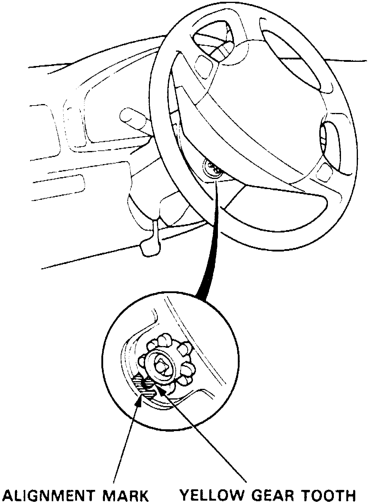

Installation
INSTALLATION1. Ensure battery cables are disconnected and red short connector is connected to air bag electrical connector. Also ensure front wheels are in straight ahead position.
Fig. 17 Cable Reel Installation:

2. Align canceling sleeve grooves with projections on cable reel, Fig. 17, then carefully install cable reel and canceling sleeve to steering shaft.
3. Install steering column upper and lower covers.
Fig. 18 Cable Reel Centered Position:

4. To center cable reel, proceed as follows:
a. Rotate cable reel clockwise until stop is contacted.
b. Rotate cable reel counter clockwise, approximately two turns, unit yellow gear tooth is aligned with mark on cover and cable reel label arrow is facing straight upward, Fig. 18.
5. Position steering wheel to steering column shaft. Attach cable reel connector to clip. When installing steering wheel, ensure wiring harness are properly routed through steering wheel openings.
6. Connect horn, and cruise control set/resume switch electrical connectors.
7. Install steering wheel to steering column shaft retaining nut. Tighten steering wheel retaining nut to specifications.
8. Install air bag assembly in steering wheel using new Torx bolts. Tighten attaching bolts to specifications.
9. Install maintenance lid and cruise control set/resume switch cover to steering wheel.
10. Connect reel electrical connector to SRS main wiring harness connector. Ensure wiring is properly routed.
11. Install reel electrical connector holder bracket to steering column.
12. Install knee bolster and instrument panel lower cover.
13. Check horn switch, windshield wiper and cruise control set/resume switch for proper operation.
14. With front wheels in straight ahead position, ensure steering wheel is centered. If steering wheel angle is off slightly, do not reposition steering wheel, correct by adjusting tie rods.
Fig. 19 Cable Reel Gear Tooth Alignment:

15. Rotate steering counterclockwise until yellow gear tooth is aligned with slot in cover, Fig. 19.
16. On models equipped with radio coded theft protection system, refer to Vehicle Damage Warnings for system disarming and arming procedures. On models equipped with airbag system, refer to Technician Safety Information for system disarming and arming procedures.